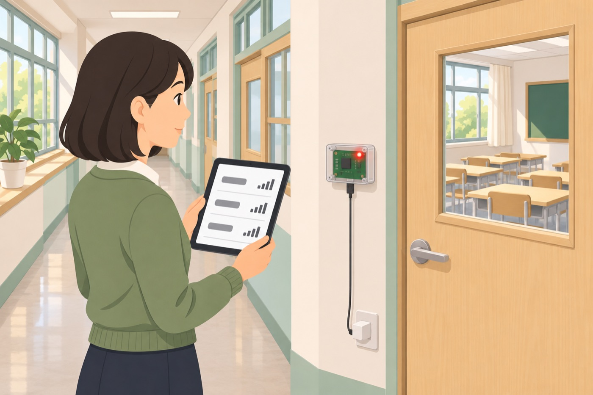

교실 전파 감지기(bt-scout) · 2026년 11월 · 안내서 2/2
교실 전파 감지기 만들기
② ESP32 편
「① 피코 편」으로 만든 감지기에 작은 기판 하나를 더해, 와이파이만 켜 둔 전화까지 잡게 합니다. 납땜은 없습니다.
192.168.4.1)이 열리는 상태에서 시작합니다. 이 프로그램은 컴파일까지만 확인했고 실제 부품에서는 아직 돌려 보지 않았습니다. 1대로 먼저 해 보세요.1. 무엇이 달라지나

| 전화의 상태 | 피코만 | ESP32를 더하면 |
|---|---|---|
| 블루투스 켜짐 | 잡힘 | 잡힘 |
| 핫스팟 켜짐 | 잡힘 | 잡힘 (더 빨리) |
| 와이파이만 켜짐 | 안 잡힘 | 잡힘 |
| 둘 다 끄고 이동통신만 | 안 잡힘 | 안 잡힘 |
와이파이를 켜 둔 전화는 주변 공유기를 찾는 신호를 가끔 내보냅니다. ESP32는 그 신호를 듣고 "보낸 주소, 세기, 종류"만 피코에 알려 줍니다. 신호의 내용은 읽지 않고 저장하지도 않습니다. ESP32 자신은 전파를 내보내지 않습니다.
삽화는 이해를 돕기 위해 GPT로 그린 그림입니다. 실제 부품의 모양과 다릅니다.
2. 준비물
| 부품 | 수량 | 비고 |
|---|---|---|
| Seeed Studio XIAO ESP32-C3 엄지손톱 크기 기판 | 감지기마다 1 (8 + 예비 2) | 핀이 납땜된 제품을 삽니다. 딸려 오는 작은 안테나가 있어야 합니다. |
| Grove-점퍼 변환 케이블 한쪽은 흰 플러그, 반대쪽은 낱선 4가닥 | 감지기마다 1 | 낱선 끝이 구멍(암) 모양이어야 XIAO의 핀에 꽂힙니다. |
| USB-C 케이블 | 1 | 데이터 겸용. 프로그램을 넣을 때만 씁니다. |
컴퓨터에는 Arduino IDE(무료, arduino.cc → Software)를 설치합니다. 그리고 프로젝트 폴더의 bt-scout/esp32_sniffer/esp32_sniffer.ino 파일을 준비합니다.
3. ESP32에 프로그램 넣기
8개 모두 같은 프로그램입니다. 아직 쉴드에 연결하지 않은 상태에서 XIAO만 컴퓨터에 꽂아 넣습니다.
- Arduino IDE를 엽니다. 메뉴의 설정(Preferences)에서 "추가 보드 관리자 URL" 칸에 다음을 붙여 넣습니다.
https://espressif.github.io/arduino-esp32/package_esp32_index.json - 왼쪽의 보드 모양 아이콘(보드 관리자)을 누르고
esp32를 검색해 esp32 by Espressif Systems를 설치합니다. 몇 분 걸립니다. - 파일 → 열기로
bt-scout/esp32_sniffer/esp32_sniffer.ino를 엽니다. - XIAO를 USB-C 케이블로 컴퓨터에 꽂습니다.
- 위쪽의 보드 선택 칸에서 보드는 XIAO_ESP32C3, 포트는 방금 새로 생긴 것을 고릅니다.
- 화살표(→) 모양의 업로드 단추를 누릅니다. 아래에 "Hard resetting via RTS pin"이 나오면 끝입니다.
- USB-C 케이블을 뽑습니다.
4. 감지기에 연결하기
4-1. 전원 스위치를 5V로
쉴드의 3V3 ↔ 5V 스위치를 5V 쪽으로 밉니다. ESP32가 5V 전원을 쓰기 때문입니다.
4-2. 선 4가닥 꽂기
먼저 XIAO ESP32-C3에 딸려 온 작은 안테나를 기판의 동그란 금색 단자에 "똑" 소리가 나게 눌러 끼웁니다. 안테나가 없으면 거의 듣지 못합니다.
변환 케이블의 흰 플러그를 쉴드의 UART1에 꽂고, 낱선 4가닥을 XIAO의 핀에 하나씩 꽂습니다. XIAO 기판 뒷면이나 옆면에 핀 이름이 인쇄되어 있습니다.
XIAO의 USB-C 단자에는 평소 아무것도 꽂지 않습니다. 전원은 쉴드에서 받습니다. XIAO는 피코에서 손가락 길이(5cm) 이상 떨어뜨려 둡니다.
연결 점검표
- 스위치가 5V 쪽이다
- 변환 케이블의 흰 플러그가 UART1에 꽂혀 있다
- 빨강은 5V, 검정은 GND, 노랑은 D6, 흰색은 D7
- XIAO에 안테나가 끼워져 있다
- XIAO의 USB-C에는 아무것도 꽂혀 있지 않다
5. 피코에 "ESP32를 달았다"고 알려 주기
- 피코를 컴퓨터에 꽂고 Thonny를 엽니다.
- 보기 → 파일의 "Raspberry Pi Pico" 칸에서
config.py를 두 번 눌러 엽니다. SNIFFER = False를 찾아SNIFFER = True로 바꿉니다. 대문자 T에 주의하세요.- Ctrl+S(Mac은 Cmd+S)로 저장하고 USB를 뽑습니다.
6. 확인하기
- 감지기를 충전기나 보조배터리에 꽂고 10초 기다립니다.
- 휴대전화(블루투스 끔)로 감지기의 와이파이
SCOUT에 붙어192.168.4.1을 엽니다. - 화면의 "와이파이를 켠 기기" 칸을 봅니다.
| 보이는 것 | 뜻 | 할 일 |
|---|---|---|
| 기기가 몇 줄 뜨거나 "잡힌 기기가 없습니다" | ESP32까지 정상 | 없음 |
| "와이파이 청취기(ESP32)에서 신호가 오지 않습니다" | ESP32의 말이 피코에 안 닿음 | 전원을 뽑고 노랑과 흰색 선을 서로 바꿔 꽂습니다 |
| "이 감지기에는 와이파이 청취기(ESP32)가 없습니다" | 5장의 설정이 안 바뀜 | SNIFFER = True로 저장했는지 다시 봅니다 |
LED 막대에서 달라지는 것
| LED 막대 | 뜻 |
|---|---|
| 빨강 칸 | 와이파이를 켠 기기도 핫스팟과 같은 빨강으로 켜집니다. 주소가 바뀌어 실제보다 많게 보일 수 있음 |
| 마지막 칸이 주황으로 깜박 | ESP32에서 신호가 오지 않음. 선을 확인합니다 |
7. 교실에서 재 보기
- 감지기를 제자리에 놓고 빈 교실에서 기준 측정 (60초)을 누릅니다. 교실 컴퓨터나 프린터처럼 늘 와이파이를 쓰는 기기가 감지에서 빠집니다.
- 실험용 전화의 블루투스를 끄고 와이파이만 켠 채 교실의 가장 먼 자리에 놓습니다.
- 전화 화면을 켰다 껐다 하며 "와이파이를 켠 기기"에 "감지"로 뜨기까지 걸린 시간을 적습니다.
- 화면을 끈 채 5분 두었을 때도 잡히는지 봅니다.
- 같은 전화를 옆 교실에 놓고 세기(dBm)를 적어 먼 자리의 값과 비교합니다.
8. 막혔을 때
| 증상 | 해 볼 것 |
|---|---|
| Arduino IDE에 포트가 안 보인다 | USB-C 케이블을 데이터 겸용으로 바꿉니다. |
| 업로드가 실패한다 | XIAO의 B(BOOT) 단추를 누른 채 USB-C를 꽂고 다시 업로드합니다. |
| "청취기에서 신호가 오지 않습니다" | 스위치가 5V인지, 빨강·검정이 맞는지 본 뒤 노랑과 흰색을 서로 바꿉니다. 3장의 프로그램을 넣었는지도 확인합니다. |
| 늘 "와이파이를 켠 기기" 감지 상태다 | 빈 교실에서 기준 측정을 다시 합니다. 그래도 계속이면 config.py의 STA_RSSI_MIN을 -60으로 올립니다. |
| 먼 자리의 전화가 안 잡힌다 | XIAO의 안테나가 끼워졌는지 봅니다. STA_RSSI_MIN을 -80으로 낮춥니다. |
| ESP32를 뗀 감지기가 이상하다 | 그 감지기의 SNIFFER를 다시 False로 바꿉니다. |
부록. 광대역 전파 센서 (실험용, 1대만)
블루투스와 와이파이를 모두 끄고 이동통신만 쓰는 전화를 잡아 보려는 실험용 부품입니다. 모든 전파의 세기를 합쳐 하나의 숫자로만 알려 주며, 감지기 자신의 전파와 기지국 신호에도 반응합니다. 쓸 만한지 재 보는 단계이므로 전체에서 1대에만 답니다.
| 부품 | 수량 | 비고 |
|---|---|---|
| AD8317 전파 세기 감지 모듈 | 1 | AD8318이 아니라 AD8317 |
| SMA 안테나(LTE용) | 1 | 모듈의 금색 단자에 돌려 끼움 |
| Grove-점퍼 변환 케이블 | 1 | 쉴드의 A0 포트에 꽂음 |
- 위 그림대로 꽂습니다(스위치는 5V 그대로).
- 피코의
config.py에서RF_SENSOR = False를RF_SENSOR = True로 바꿔 저장합니다. - 화면에 "광대역 전파 세기" 칸이 생깁니다. "지금", "평소", "최근 1분 급증" 숫자가 보입니다.
- 이동통신만 켠 전화로 교실 먼 자리에서 영상을 틀어 봅니다. "지금" 값이 "평소"보다 10 이상 올라가고, 전화를 쓰지 않을 때는 급증이 0에 머물면 쓸 만한 것입니다.
- 쓸 만하다고 판단되면
RF_ALERT = True로 바꿉니다. 그때부터 급증 시 LED 막대에 흰색 칸이 켜집니다.
화면의 dBm 값은 추정이며 센서 개체마다 다릅니다.